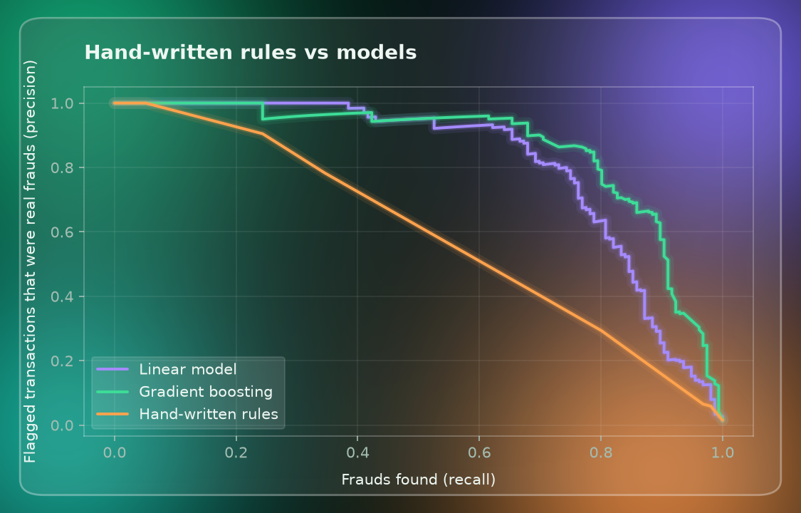

Projects
Fraud
Spotting fraudulent card transactions with hand-written rules and machine learning, then deciding what to do: authorize, ask for a simple or strong authentication, or reject.
Try it yourself: in the demo you act as the bank (the demo is in Italian). Pick one of six customers, see the habits the bank has built from their history, enter a spend and press "Controlla transazione": the system compares it with those habits, flags the anomalies and gives a risk score from 0 to 100.
Tested on 10,200 transactions the model had never seen. All data is synthetic: the results show how the method behaves, not how it would perform on real transactions.
01 — The problemTwo ways to be
When someone pays by card, the bank has a fraction of a second to decide: is this the real cardholder or a thief? Frauds are rare (about 1.5% of the transactions in this project), so most payments are honest and a careless system would annoy a lot of people.
- False negative
- A fraud is authorized. The bank loses the money.
- False positive
- An honest customer is blocked or interrupted. The customer gets angry and may stop using the card.
Reducing one error usually increases the other. The whole project is about handling that trade-off in a measurable way.
02 — The ideaHabits, not
A real fraud usually breaks the habits of the cardholder. So each transaction is compared with the history of the same customer. The data is synthetic: 700 customers, about 35,500 transactions and 1.5% frauds, each customer with their own favourite shops, usual spending, country and devices.
| Signal | What it checks |
|---|---|
| New merchant | The customer never bought from this shop before. |
| Unusual device | Used fewer than 3 times before. |
| Unusual country | Used fewer than 3 times before. |
| Spending vs. usual | Amount divided by the median of the customer's past purchases (capped at 10 times). |
| Burst | Several purchases within the last hour. |
But an unusual purchase is not always a fraud: a holiday, a new phone, a computer bought for the first time. The data includes both cases on purpose: some frauds look perfectly normal and some honest purchases look suspicious. Otherwise the problem would be too easy.
03 — MethodRules against
First, hand-written rules: five yes/no questions, each worth some points (a high amount counts only half a point, because a fraud can also be a small purchase). Above a threshold the transaction is flagged. With 2 points the rules find 74% of the frauds, but flag 744 honest customers.
Then, machine learning: a model learns from the past which signals matter and how much. To be fair, it trains on the oldest 25,300 transactions and is tested on the 10,200 most recent ones, which it has never seen, as a bank would do. The comparison is made at the same number of honest customers blocked, because plain accuracy would be misleading: answering "not a fraud" to everything would be right 98.5% of the time.

| Frauds found while blocking at most… | 10 honest | 50 honest | 150 honest |
|---|---|---|---|
| Hand-written rules | 29% | 45% | 69% |
| Logistic regression | 65% | 77% | 85% |
| Gradient boosting | 68% | 83% | 91% |
04 — DecisionFrom a score to
The final model is a gradient boosting with calibrated probabilities: when it says 80%, about 80 transactions out of 100 really are frauds. The probability is rescaled to a risk score from 0 to 100, split in three bands and four actions.
| Score | Action | Transactions | Frauds | Honest |
|---|---|---|---|---|
| 0–29 · low | Authorize | 9,651 | 5 | 9,646 |
| 30–69 · medium | Simple authentication | 407 | 30 | 377 |
| 70–94 · high | Strong authentication | 54 | 36 | 18 |
| 95–100 · high | Reject | 88 | 85 | 3 |
All four actions happen inside the payment, which is decided in a fraction of a second. Authorize lets it through. Simple authentication asks the customer to confirm right away, with a code or a notification in the app. Strong authentication asks for a stronger check, such as biometrics or a direct confirmation with the bank, and the payment goes on only if it is passed. Reject declines the payment.
The thresholds are not arbitrary. Every action has a cost: a fraud that gets through loses its amount (less the share the action stops), and each action also disturbs the honest customers it touches (simple authentication 1 euro, strong authentication 6, rejection 15 in this project; illustrative costs). For each transaction the system picks the cheapest action. In the test, 151 of 156 frauds are intercepted, 377 honest customers (3.8%) are asked to confirm and only 21 (0.2%) get the strong check or are rejected. The total cost is 90% lower than authorizing everything and 53% lower than a single authorize/reject threshold.
An honest customer with an unusual purchase, such as a computer bought for the first time, is not blocked: at worst, they are asked for a confirmation.
05 — Under attackStress
500 new transactions, 200 of them frauds (40% instead of 1.5%), to simulate a massive attack. Same model and thresholds, nothing retrained: 195 of the 200 frauds are intercepted (97.5%) and 5 get through. Only 6 of the 300 honest customers are asked to confirm and 1 gets the strong check. Hand-written rules find 146 of the 200 frauds on the same test.
06 — HonestyWhat this does
- Synthetic data
- Real bank data is secret, so I generated it. The model learns the patterns I wrote into the generator. Real results would be different, probably worse.
- Invented costs
- The thresholds depend on illustrative costs. With other costs they would move.
- Few frauds
- The main test has 156 frauds: with another sample the numbers would move by a few points.
- Simple model
- It ignores long sequences of purchases, merchant reputation and networks between customers and merchants. A real system also lets the customer unblock a payment immediately.
- After a rejection
- The project does not simulate what happens next: contacting the customer or unblocking the card.
Next step: run the same pipeline on a real public dataset and add signals such as merchant risk and impossible travel.
- Python
- pandas
- scikit-learn
- Gradient boosting
- JavaScript